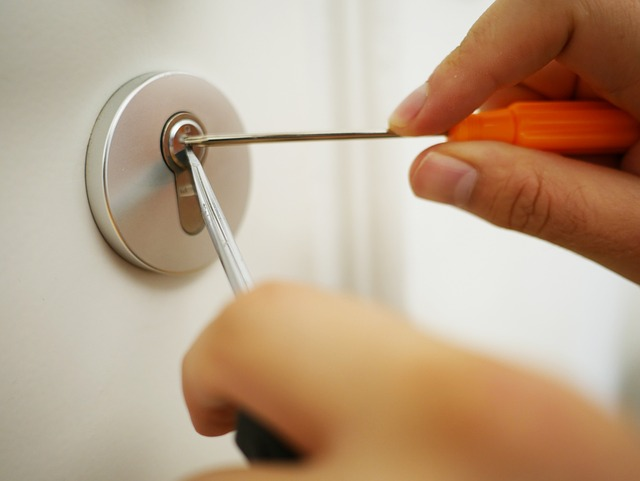
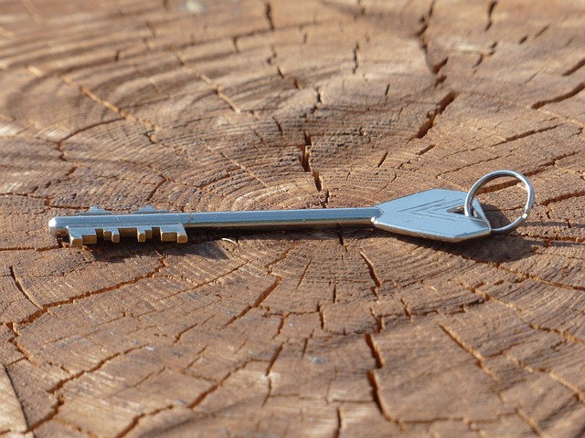

Nöbetçi Anahtar
KAPAK YAZISI
Kapıda kaldınız. Telefon açılmıyor. Şimdi ne olacak?
Gece yarısı kilitli kapı önünde en çok sorulan iki soru: usta nerede, kaç para? Bu sayfa ikisine de iki dokunuşta cevap verir.

01 · KONUM
En yakın usta kaç dakikada gelir?
Sonuç burada görünecek.
02 · FİYAT
Hangi kapı, kaç para?
Kapı tipini seçin.
İLKE I
Önce söyler, sonra yapar
Kesin tutar usta kapıya gelince, işe başlamadan konuşulur.
İLKE II
Yola çıkınca haber
WhatsApp'a "usta yolda" mesajı ve takip sayfası bağlantısı gelir.
İLKE III
Kayıt sizde
Yapılan iş ve tutar mesajda yazılı kalır; sonradan itiraz etmek kolaylaşır.
